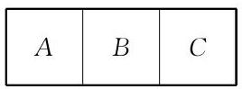

复习题A · 1
- 如图,用 6 种不同的颜色将 三个区域涂色,每个区域涂上一种颜色,且有公共边的区域不能涂同一种颜色. 问: 不同的涂色方法共有多少种?

(第 1 题)
答案与解析收起 / 展开
【回源配对并编辑补解】。
教师整合版 / 沪教版高中数学
选择性必修第二册
第6章计数原理 · 保留教材主线与原题
教材与正式教参整合
先来考察 的二项展开式.
根据多项式的乘法运算规则, 的二项展开式中的每一项是从 的每一个括号中任意取出一个字母的乘积,因而展开式的每一项都是三次式,即 的二项展开式恰由以下 4 个形式的项组成:
从特殊到一般, 这是数学中常用的研究方法.
对于每一项的系数, 可以利用组合的定义得到:
相当于 3 个括号中,每一个都不取字母 ,这样的取法有 种,所以 的系数为
相当于 3 个括号中,恰有一个取出字母 ,这样的取法有 种,所以 的系数为 ;
相当于 3 个括号中,恰有两个取出字母 ,这样的取法有 种,所以 的系数为 ;
相当于 3 个括号中,每一个都取出字母 ,这样的取法有 种,所以 的系数为
因此, 的二项展开式可以写为
一般地,对于 ,根据多项式的乘法运算规则, 的二项展开式中的每一项是从 的每一个括号中任意取出一个字母的乘积,因而展开式的每一项都是一个 次式,即 的二项展开式由以下 个形式的项组成:
类似于上面的分析,对于 相当于 个括号中,恰有 个取出字母 ,这样的取法有 种,所以 的系数为 . 因此, 的二项展开式可以写为
乘法原理(分步计数原理):做一件事，需要依次完成 个步骤，其中完成第一步有 种不同的方法,完成第二步有 种不同的方法, ,完成第 步有 种不同的方法,那么完成这件事共有 种不同的方法.
加法原理(分类计数原理):做一件事，完成它有 类办法，其中第一类办法有 种不同的方法，第二类办法有 种不同的方法，……，第 类办法有 种不同的方法， 那么完成这件事共有 种不同的方法.
乘法原理和加法原理是关于计数的两个基本原理，它们是推导排列数、组合数公式的基础，在解题中应正确区分和灵活使用.
从 个互不相同的元素中，取出 个不同元素按照一定的顺序排成一列， 叫做从 个元素中取出 个元素的一个排列. 所有这样的排列的个数(排列数)用符号 表示,其值为 ,而 .
从 个互不相同的元素中，取出 个不同元素作为一组，叫做从 个元素中取出 个元素的一个组合. 所有这样的组合的个数(组合数)用符号 表示，其值为
已知 是自然数， 是正整数，且 ，则 ， .
排列和组合是两个基本的计数问题，在解决实际问题时，要善于分析问题的条件， 把问题转化为相应的排列或组合问题.
等式 称为二项式定理. 等式右边的第 项为 .
对任意正整数 .

(第 1 题)
【回源配对并编辑补解】。
【回源配对并编辑补解】。
【回源配对并编辑补解】。
【回源配对并编辑补解】。
【回源配对并编辑补解】。
【回源配对并编辑补解】。
【回源配对并编辑补解】。
【回源配对并编辑补解】。
【回源配对并编辑补解】。
【回源配对并编辑补解】。
(1)甲不在最左边，乙不在最右边；
(2)男生必须排在一起；
(3)男生和女生相间排列；
(4)在甲、乙两人中间必须有 3 人.
【回源配对并编辑补解】(1) ；(2) ；(3) ；(4) 。
(1)从中任取 4 个球, 红球的个数不比白球少的取法有多少种?
(2)若取一个红球记 2 分，取一个白球记 1 分. 从中任取 5 个球，使总分不少于 7 分的取法有多少种?
【回源配对并编辑补解】(1) ；(2) 。
(1) ;
(2) ；
(3) .
【回源配对并编辑补解】(1) ；(2) ；(3) 。
【回源配对并编辑补解】。